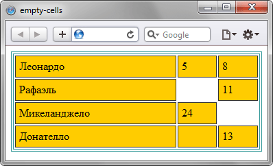
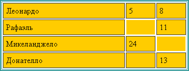

empty-cells
Задаёт отображение границ и фона в ячейке, если она пустая. При одновременном добавлении к таблице свойства border-collapse со значением collapse, свойство empty-cells игнорируется.
Ячейка считается пустой в следующих случаях:
- нет вообще никаких символов;
- в ячейке содержится только перевод строки, символ табуляции или пробел;
- значение visibility установлено как hidden.
Добавление неразрывного пробела воспринимается как видимое содержание, т. е. ячейка уже будет непустой.
Краткая информация
| Значение по умолчанию | show |
|---|---|
| Наследуется | Да |
| Применяется | К <td>, <th> или к элементам, у которых display: table-cell |
Синтаксис
empty-cells: show | hideЗначения
- show
- Отображает границу вокруг ячейки и фон в ней.
- hide
- Граница и фон в пустых ячейках не отображается. Если все ячейки в строке пустые, то строка прячется целиком.
Пример
<!DOCTYPE html>
<html>
<head>
<meta charset="utf-8">
<title>empty-cells</title>
<style>
table {
border: 4px double #399; /* Граница вокруг таблицы */
}
td {
background: #fc0; /* Цвет фона */
border: 1px solid #333; /* Граница вокруг ячеек */
empty-cells: hide; /* Прячем пустые ячейки */
padding: 5px; /* Поля в ячейках */
}
</style>
</head>
<body>
<table width="100%">
<tr>
<td>Леонардо</td><td>5</td><td>8</td>
</tr>
<tr>
<td>Рафаэль</td><td> </td><td>11</td>
</tr>
<tr>
<td>Микеланджело</td><td>24</td><td></td>
</tr>
<tr>
<td>Донателло</td><td> </td><td>13</td>
</tr>
</table>
</body>
</html>Результат данного примера в браузере Safari показан на рис. 1. Тот же пример в браузере Internet Explorer 7 продемонстрирован на рис. 2.

Рис. 1. Вид таблицы в браузере Safari

Рис. 2. Вид таблицы в браузере Internet Explorer 7
Объектная модель
Объект.style.emptyCells
Примечание
Internet Explorer до версии 7.0 включительно не поддерживает свойство empty-cells и отображает пустые ячейки всегда так, словно для них установлено empty-cells: hide.
Firefox версии 2 и ниже не прячет строку таблицы, если для всех ячеек задано empty-cells: hide и ячейки пусты.
Браузер Opera до версии 9.27 включительно не скрывает строку таблицы и для пустых ячеек отображает цвет фона.
Спецификация
| Спецификация | Статус |
|---|---|
| CSS Level 2 (Revision 1) | Рекомендация |
Браузеры
| Internet Explorer | Chrome | Opera | Safari | Firefox |
| 8 | 1 | 4 | 1 | 1 |
| Android | Firefox Mobile | Opera Mobile | Safari Mobile |
| 1 | 1 | 6 | 3.1 |